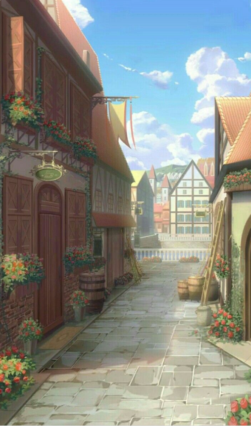

openDescent:BRAENOR
est un RolePlayerGame(RPG) plateau à monde ouvert de type médieval-fantasy, ce qui veut dire que votre groupe décide d'aller où il veut et faire ce qu'il lui plait ! Explorez, combattez, ou flanez... Cette aventure est la vôtre, vous choisissez ce que vous en faites. Vous êtes un groupe d'aventuriers sur le point de découvrir une multitude d'énigmes et de dangers. Une des nombreuses particularités d'openDescent:BRAENOR, c'est que le Maître du Jeu(MJ) est considéré comme un régulateur, un joueur mais aussi un ennemi !
les rares règles de restriction :
- Vous ne pouvez pas tuer les PersonnagesNonJoueurs(PNJ) principaux en ville
- Dès qu'une quête annexe ou secondaire est commencée, elle doit être finie ou annulée pour en commencer une autre
- Chaque décision importante est unanime
Il existe beaucoup de règles de jeu selon les situations, vous n'êtes pas au bout de vos surprises !
EXEMPLE DE CAPACITES :
Attaque Rapide : peut attaquer deux fois (monstres uniquement)
Bond : de façon horizontale ou verticale, vous avancez jusqu'à deux fois votre vitesse et attaquez chaque entité traversée
Etourdissement : Dure 1 tour. Si au moins 1 dégât infligé alors étourdi. Sur monstres (hors boss) : ne peut rien faire. Sur héros : perd 1 action.
Peur X : en attaquant une entité possédant Peur, vous devez dépenser X éclair d'énergie sinon l'attaque échoue.
Vol : vous pouvez traverser les entités et les obstacles si vous connaissez le point d'arrivée.
Et beaucoup d'autres ....
DEBUT DE L'AVENTURE : "Le cercle magique à vos pieds disparait lentement... Vous découvrez l’endroit de votre arrivée : une petite impasse fleurie dans une ville riche et prospère : BRAENOR de la région de BRAENOR. Il est midi, vous voyez le ciel bleu ainsi que la rue du marché à l’entrée de l’impasse. A votre gauche un petit commerce de fleurs bien entretenu."
C'est à ce moment que vous êtes lâchés dans le monde ouvert d'openDescent:BRAENOR... Bon chance !